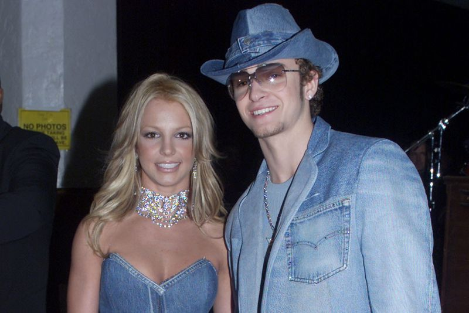

‘I know I failed’: Justin Timberlake apologizes to Britney Spears and Janet Jackson
LOS ANGELES (Reuters) – Pop star Justin Timberlake on Friday issued a public apology to his former girlfriend Britney Spears and singer Janet Jackson, saying he had failed them in the past.
Timberlake spoke out on his Instagram account after criticism this week on social and mainstream media of interviews he gave some 20 years ago about his sex life with Spears when both were at the height of their careers.
The backlash followed the broadcast of a TV documentary about the rise and fall of Spears, including how she was shamed in the media when their relationship ended in 2002.
Timberlake also has been dogged for years by accusations that he failed to take sufficient responsibility for the infamous 'wardrobe malfunction' during the 2004 Super Bowl half time show when he mistakenly exposed Janet Jackson’s breast on stage.
'I specifically want to apologize to Britney Spears and Janet Jackson both individually, because I care for and respect these women and I know I failed, ' Timberlake, 40, wrote on Instagram.
The 'Sexy Back' pop star, now married to actress Jessica Biel, said he was sorry for speaking out of turn, or not speaking up, for what was right in the past.
'I understand that I fell short in these moments and in many others and benefited from a system that condones misogyny and racism,' he said.
Timberlake and Spears dated for about three years before splitting up abruptly in 2002.Spears was questioned in the media about her virginity while Timberlake said he had slept with her and then wrote a song 'Cry Me a River' in which he implied that she had cheated in the relationship.
In Friday’s apology, Timberlake said the entertainment industry sets white men up for success.
'Because of my ignorance, I didn’t recognize it for all that it was while it was happening in my own life,' he said.
Spears’ business and personal affairs have been controlled by court-appointed conservators since 2008.
Representatives for Jackson and Spears did not immediately respond to requests for comment on Friday.
(Reporting by Jill Serjeant; Editing by Richard Chang)
Posted On: 2021-02-15T00:00:00

Content Date: 2021-02-15
Download Date: 2021-04-17
Document ID: L0C04A8EY